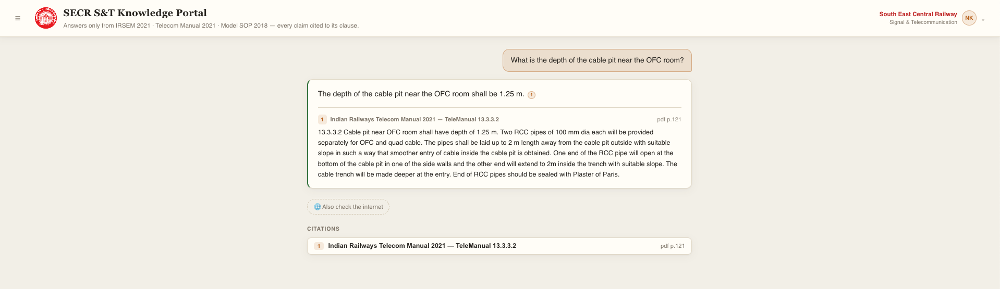
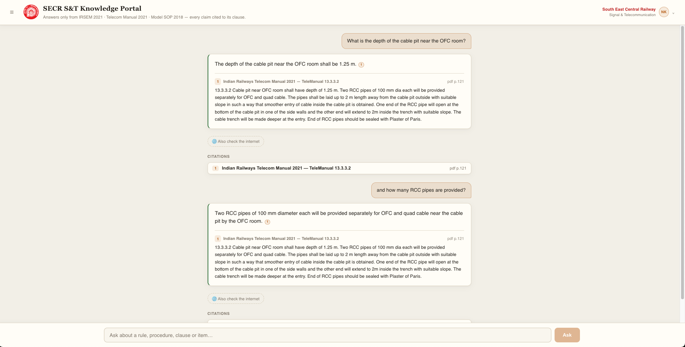
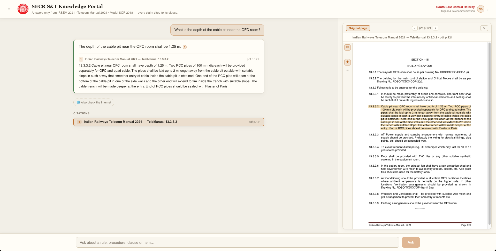
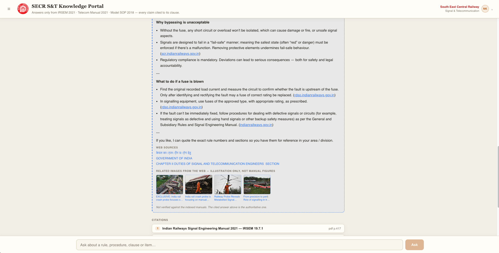
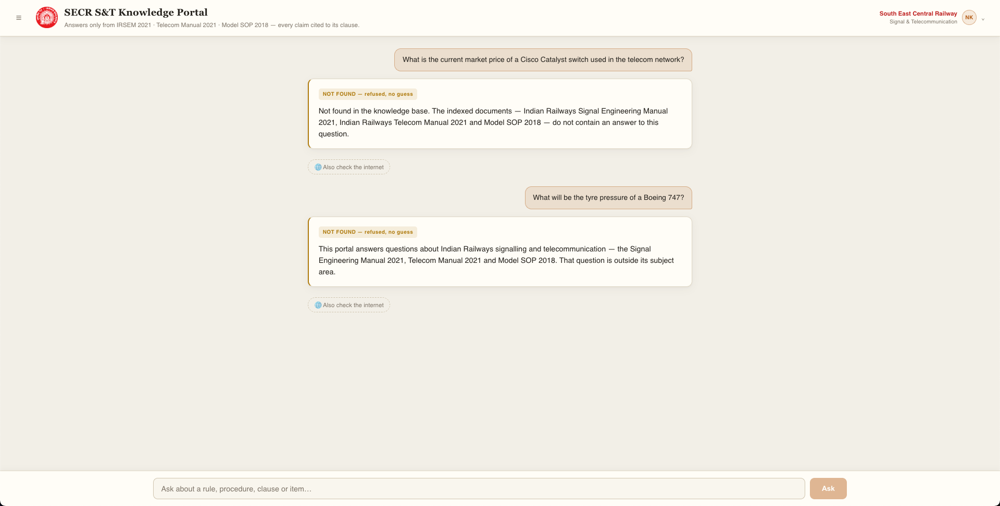
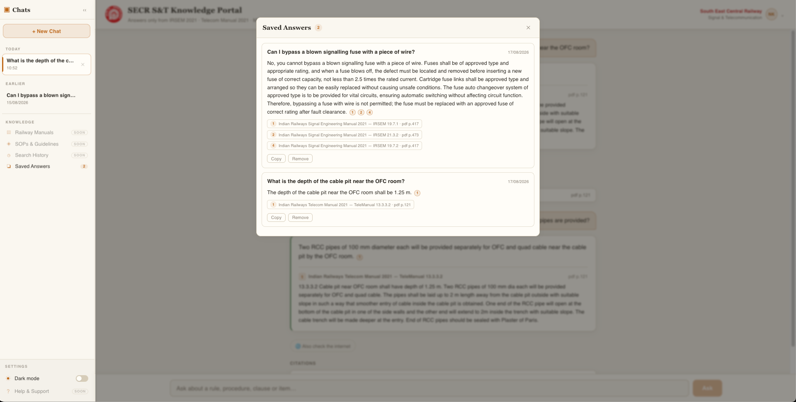
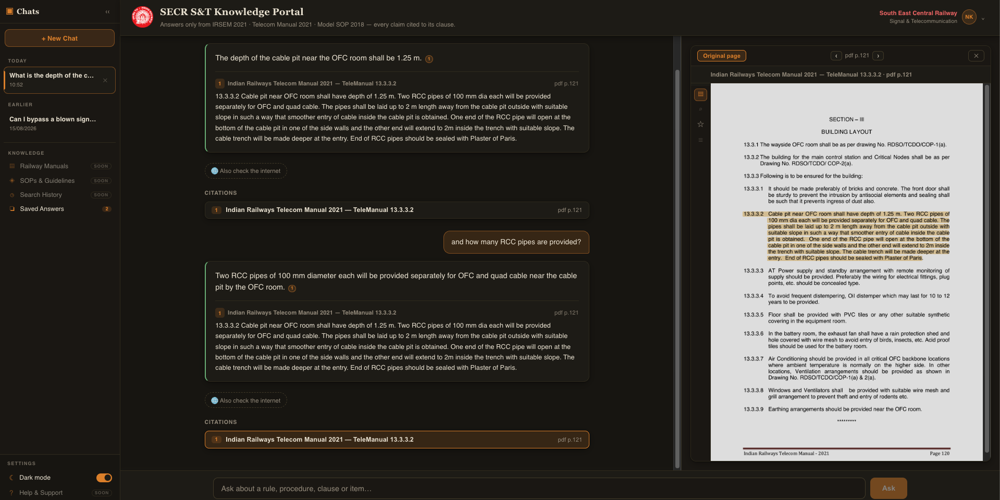
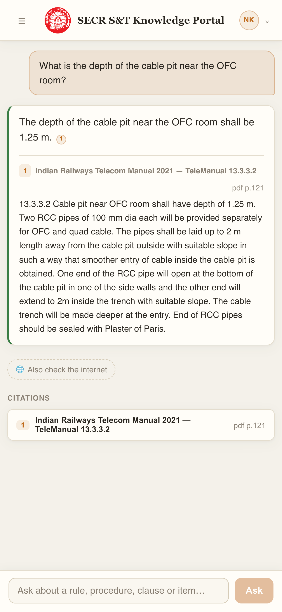
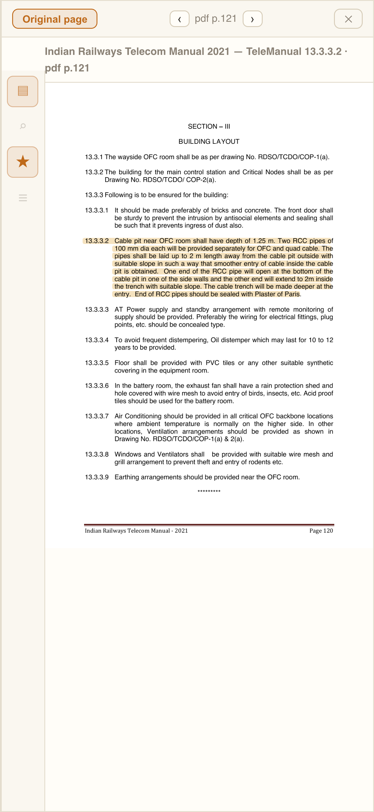
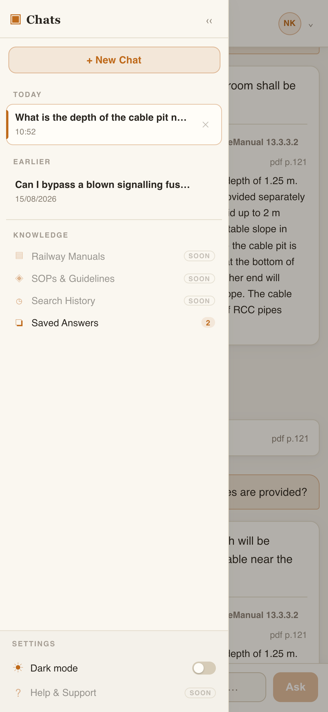

Grounded answer
Every claim carries its clause
The answer is assembled only from passages actually retrieved from the manuals. Each numbered marker is a live citation naming the document and clause it came from — nothing in the text is unattributed.

Your question — asked, shown back as typed. Answer from the manuals — the direct, cited answer. Also check the internet — an optional web lookup. Every claim carries its clause — marker links to its source. Document & clause details — manual, clause, page. Citations section — every source used, listed.
[1], [2] are not decoration — each resolves to a
document, a clause reference and a page number. An answer that cannot be cited is
never shown.
Conversation context
Follow-ups resolve against the conversation
"What about the pipes?" is not a question a search index can answer. The prior turns rewrite the elliptical follow-up into a standalone question before retrieval runs — so the follow-up is grounded just as strictly as the first question was.

The printed page
The citation chain ends at the paper
Tapping a citation opens the actual rendered page of the manual, with the exact lines the answer drew from highlighted on it. The reader verifies against the document itself rather than trusting the summary.

Optional web lookup
Clearly separated from the manuals
Where the corpus is silent, the reader may opt in to a web search. The result is fenced, labelled, and never mixed into the cited answer — and untrusted sources such as social media pages are filtered out before they can be quoted.

Refusal
"Not found" is a feature, not a failure
Asked something the manuals do not cover, the portal declines and says so — naming the documents it searched and the nearest related clauses. It does not improvise, and it does not dress a guess up as an answer.

Saved answers
Keep an answer, keep its evidence
A saved answer stores its full citations — document, clause, page and passage — not a pointer back to the chat. It survives deleting the conversation it came from, and its citations stay fully interactive.

Light and dark
Built for a signal cabin, not just a desk
Dark mode is a full theme, not an inverted filter — sidebar, source viewer and highlight colours are all restyled for low-light reading, with the choice remembered once a reader picks it.

In the field
The same answers, on a phone
S&T staff need the manuals at the equipment, not only at a desk. The interface is built for a one-handed phone viewport — the same engine, the same citations, the same refusals.



Under the hood
How an answer is built
- RewriteFollow-ups resolved into standalone questions using recent turns.
- RetrieveDense embeddings and BM25 keyword search run in parallel, fused, then reranked by a cross-encoder.
- GateCalibrated thresholds decide answer or refuse — before any generation cost is spent.
- JudgeA sufficiency check asks whether the passages actually answer the question, not merely share its topic.
- Generate & verifyThe draft is checked back against its sources; unsupported sentences are repaired or the answer is discarded.
- CiteEvery claim is bound to a clause, a page, and the lines on it.